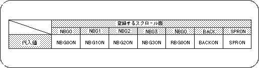

Return to previous page | Return to menu | Go to next page
Color offset
In SGL, the color displayed on the screen can be changed by adding or subtracting the offset value to the color RAM data of the sprite and each scroll screen (this value itself does not change).
If you want to use the color offset function, you need to follow the steps below.
1) Various color offset settings
There are two types of color offsets, color offset A and B.
The scroll plane that you want to use the color offset function must register the scroll plane as one of the two color offsets.
Use the functions “slColOffsetOn” and “slColOffsetBUse” to register scrolls.
- [void slColOffsetOn (Uint16 flag);]
- Register the scroll surface you want to use the color offset function.
Substitute the values in the table below corresponding to the scroll surface to be registered.
- [void slColOffsetBUse (Uint16 flag);]
- Register the scroll surface you want to use color offset B.
The scroll surface registered only with the function “slColOffsetOn” uses offset A.
Substitute the values in the table below corresponding to the scroll surface to be registered.
Table 8-24 “slColOffsetOn”, “slColOffsetBUse” parameter substitution values (flag)

Note) The values in the above table are defined in “sl_def.h” included with the system.
2) Setting the offset value
Each registered scroll plane is displayed on the screen under the influence of the offset value set for each color offset.
The function “slColOffSetA, B” is used to set the offset value for each color offset.
- [void slColOffsetA (Sint16 r, Sint16 g, Sint16 b);]
- [void slColOffsetB (Sint16 r, Sint16 g, Sint16 b);]
- Set the color offset value for each color offset.
For the parameter, substitute the offset value (signed 9 bits) of each RGB color element.
The function “slColOffSetA” is used to set the offset value for color offset A, and the function “slColOffSetB” is used to set the offset value for color offset B.
Return to previous page | Return to menu | Go to next page